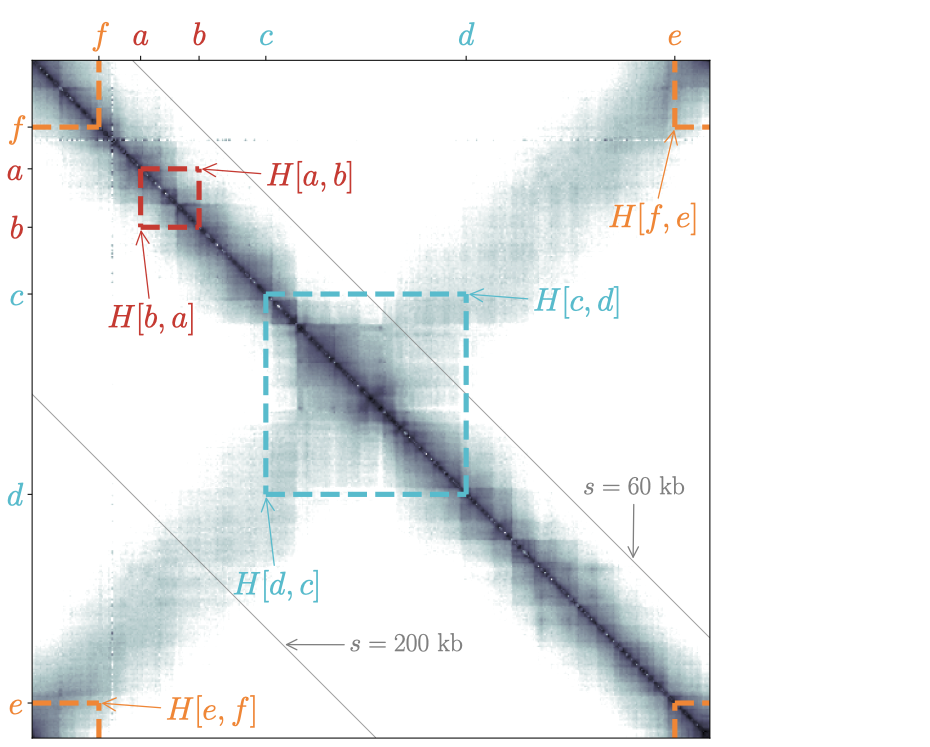
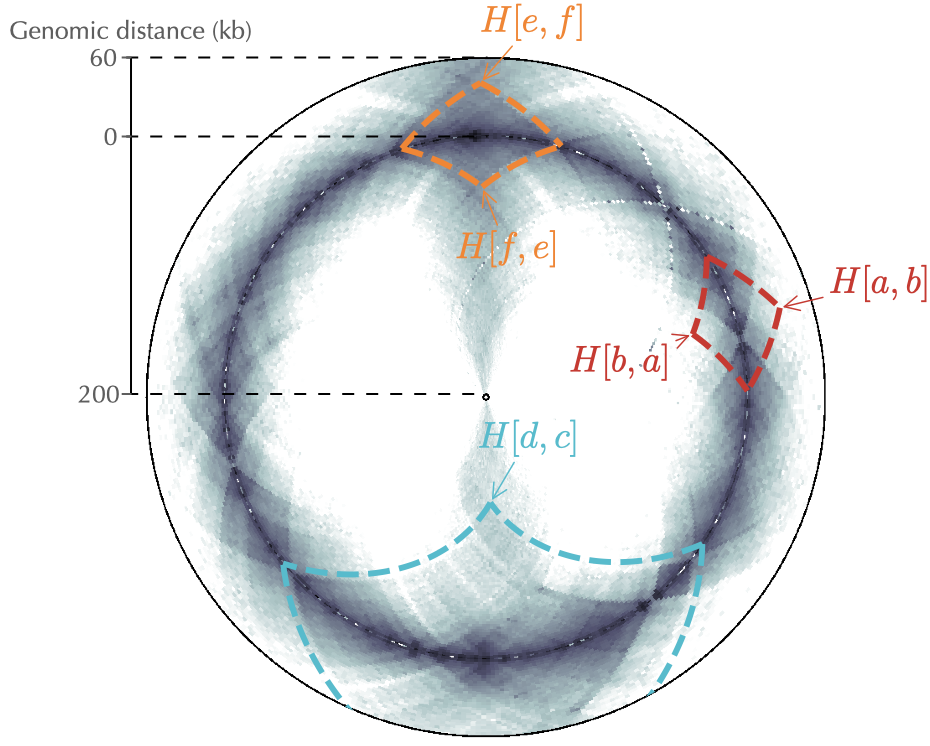

To understand how data are represented in circhic, we discuss the case of C. crescentus (Le et al. (2013) Science, 342(6159), 731–734). We first remind that a square matrix representation provides a redundant, yet convenient representation of the data because the lower part of the matrix is identical to the upper part. This symmetry/redundancy property is conserved by default in circhic (reflect mode). Just as with the square matrix, this is particularly useful to highlight chromosome interaction domains (Fig. 1).
Next, in circhic a “circle” corresponds to all contacts between pairs of loci separated by the same genomic distance (\(s\)). As a consequence, it is impossible to “remove” the inner circle. At most, its radius can be set to a very small value, with the consequence that contact frequencies at the corresponding genomic distance are represented in a very compact way. More generally, a circular representation naturally implies some distortion such that, for instance, although data are symmetric with respect to \(s=0\), the display does not appear totally symmetric (see for instance the dotted lines indicating contacts in Fig. 1).
Finally, to understand how circhic naturally copes with chromosome circularity, we consider the example of three pairs of loci that are separated by at most 40 kb: \((a,b)\), \((c,d)\) and \((e,f)\). Using a circular representation for genomic distances up to 60 kb (right panel of Fig. 1) then allows to properly apprehend the genomic location of these contacts. More importantly, and in contrast with the square matrix representation, the display is independent of the location of loci. Namely, the loci \(e\) and \(f\), which are located on each side of the origin of replication, are handled the same way as the other loci.
Fig. 1: circhic naturally copes with the circularity of bacterial Hi-C data as it properly displays contact frequencies between loci that are located at the edges of the square matrix (loci \(e\) and \(f\)). circhic also provides an intuitive genomic location of contacts. Left panel: the gray lines indicate the genomic distance (\(s\)) used in the circular representation of the right panel.
To display contact frequencies that occur at large distances, as in the case of the secondary diagonal of C. crescentus (Fig. 2), one must associate, in principle, the inner and outer radius with larger genomic distances. A natural consequence of this will nevertheless be the squashing of the local patterns, such as the chromosome interaction domains. As shown in Fig. 2, a convenient work around is to use different genomic distances for the inner and outer circles and to set the inner radius as small as possible.
 Fig. 2: Same as Fig. 1 but with a more distant pair of loci \((c,d)\) and using different genomic distances (200 kb and 60 kb, respectively) for the inner and outer circles. Note that \(H[c,d]\) does not display in the circular representation because the genomic distance between \(c\) and \(d\) is larger than the genomic distance of the outer circle.
{kind=link}
{kind=link}
{kind=link}
{kind=link}